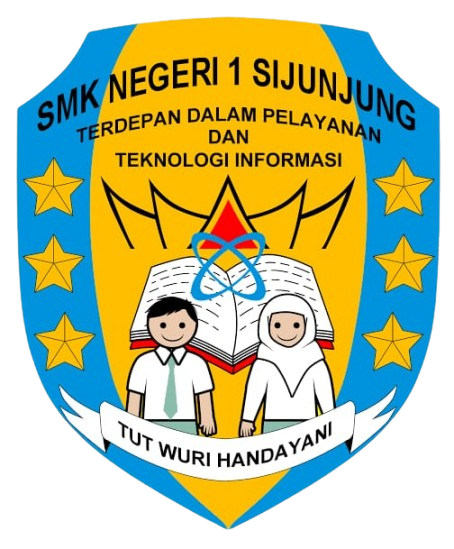

 SMK Negeri 1 Sijunjung adalah salah satu sekolah menengah kejuruan unggulan di Kabupaten Sijunjung yang berkomitmen mencetak lulusan siap kerja, berdaya saing tinggi, dan adaptif terhadap perkembangan teknologi serta industri kreatif. Dengan lingkungan belajar yang kondusif, fasilitas lengkap, dan tenaga pengajar profesional, SMK Negeri 1 Sijunjung menjadi pilihan tepat bagi generasi muda untuk mengembangkan potensi diri di bidang keahlianingkungan belajar yang memadukan semangat dan keindahan!
Pelajari Lebih Lanjut